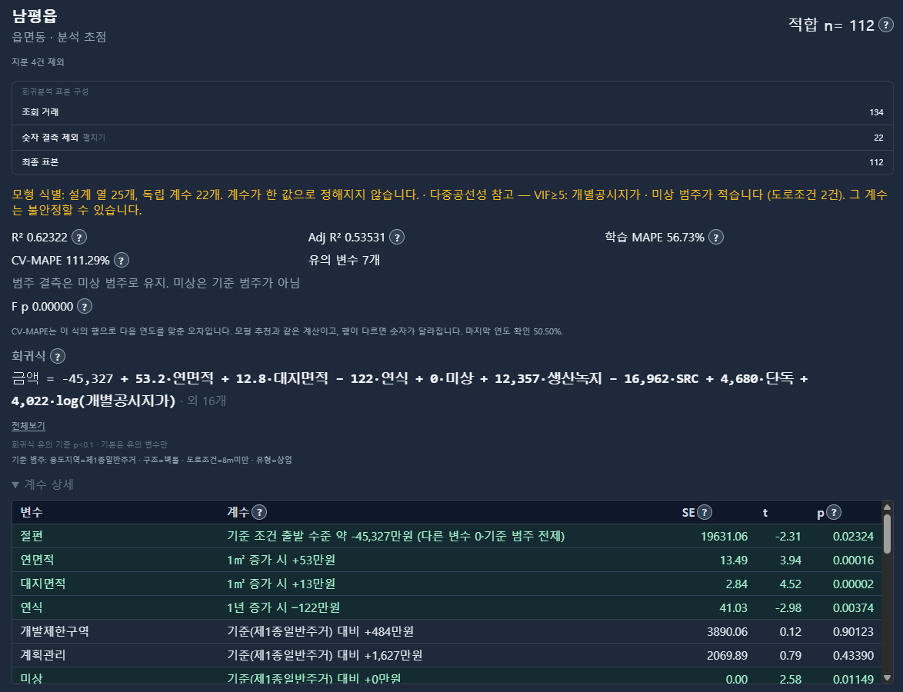

서두 · 학습목표
여러 변수를 함께 분석하면 관계가 어떻게 달라질까요?
토지의 면적이 클수록 거래단가가 낮아지는 경향이 나타났다고 가정해 보겠습니다.
그런데 면적이 큰 토지는 주로 농촌지역에 있고, 작은 토지는 도시지역에 많이 분포한다면 어떨까요?
이 경우 면적과 거래단가의 관계에는 지역별 가격 수준의 차이도 함께 반영될 수 있습니다.
그렇다면 지역의 차이를 고려한 뒤에도 면적과 거래단가 사이에 같은 관계가 나타날까요?
이러한 질문을 살펴보는 데 사용하는 방법이 다중회귀분석(Multiple regression)입니다.
다중회귀는 하나의 결과변수와 여러 설명변수 사이의 관계를 하나의 회귀식으로 나타냅니다.
이번 장에서는 변수를 추가하면 회귀계수가 왜 달라지는지, 범주형 변수와 상호작용은 어떻게 해석하는지, 그리고 변수들 사이의 정보가 겹칠 때 어떤 문제가 발생하는지 알아보겠습니다.
이번 장의 학습목표
- 단순회귀와 다중회귀의 차이를 이해합니다.
- 다른 설명변수를 고정한 조건에서 회귀계수를 해석합니다.
- 변수를 추가했을 때 회귀계수의 부호와 크기가 달라지는 이유를 알아봅니다.
- 범주형 변수와 상호작용항의 의미를 이해합니다.
- 다중공선성과 변수 선택 문제를 구별합니다.
- 결정계수와 수정 결정계수, 계수별 검정의 의미를 살펴봅니다.
공통 학습 자료 30건 · 계수·구간·가상 예제 JSON. 실제 거래 출처와 대표성이 검증되지 않은 학습 자료입니다.
다중회귀의 기본 구조
여러 설명변수의 관계를 하나의 회귀식으로 나타냅니다
17장에서 배운 단순선형회귀는 하나의 설명변수를 사용합니다.
예를 들어 토지의 면적만으로 거래단가를 설명하는 식은 다음과 같습니다.
ŷ = b₀ + b₁ × 면적
다중회귀는 여기에 층, 용도지역, 건축연도 등 다른 설명변수를 추가할 수 있습니다.
설명변수가 여러 개일 때 일반적인 모집단 회귀모형은 다음과 같습니다.
Y = β₀ + β₁X₁ + β₂X₂ + … + βₖXₖ + ε
표본자료로 계산한 회귀식은 다음과 같이 표현합니다.
ŷ = b₀ + b₁x₁ + b₂x₂ + … + bₖxₖ
각 기호의 의미는 다음과 같습니다.
- Y: 설명하려는 결과변수
- X₁, X₂, …, Xₖ: 회귀식에 포함된 설명변수
- b₀: 추정된 절편
- b₁, b₂, …, bₖ: 각 설명변수의 추정 회귀계수
다중회귀도 최소제곱법을 사용할 수 있습니다.
관측값과 적합값 사이의 잔차를 제곱해 더한 값이 가장 작아지도록 회귀계수를 계산하는 것입니다.
다만 여러 설명변수를 포함한다는 점에서 단순회귀보다 계수의 해석이 복잡해집니다.
다중회귀에서 가장 중요한 것은 각 회귀계수가 다른 포함 변수들을 고정한 조건에서의 관계를 나타낸다는 사실입니다.
예를 들어 면적과 층을 포함한 가산적 선형회귀식에서 면적계수는 층이 같은 조건에서 면적이 1㎡ 다른 두 관측값의 적합 단가 차이를 뜻합니다.
하지만 위치나 용도지역 등 모형에 포함되지 않은 조건까지 같다는 뜻은 아닙니다.
또한 회귀계수 자체가 해당 변수를 실제로 변화시켰을 때 발생하는 인과효과를 의미하지는 않습니다.
다중회귀와 다변량 회귀는 같을까요?
일반적으로 다중회귀는 하나의 결과변수를 여러 설명변수로 설명하는 모형을 말합니다.
반면 다변량 회귀는 여러 결과변수를 동시에 분석하는 모형을 의미합니다.
두 용어는 비슷하게 사용되기도 하지만 통계적으로 구분할 필요가 있습니다.
변수를 추가하면 관계가 달라지는 이유
전체 자료의 관계와 집단 내부의 관계는 다를 수 있습니다
16장에서는 서로 다른 집단을 합쳤을 때 상관관계의 방향이 바뀔 수 있다는 사실을 배웠습니다.
회귀분석에서도 비슷한 현상이 나타날 수 있습니다.
이번에는 두 집단 A와 B에 대한 별도의 가상 자료를 살펴보겠습니다.
| 집단 | X | Y |
|---|---|---|
| A | 1, 2, 3 | 8.2, 8.6, 10.2 |
| B | 4, 5, 6 | 2.2, 2.6, 4.2 |
각 집단 내부에서는 X가 증가할수록 Y도 증가하는 경향이 있습니다.
하지만 B집단은 A집단보다 X의 값이 크면서 Y의 수준은 낮습니다.
이러한 자료를 하나로 합쳐 단순회귀를 계산하면 다음과 같은 결과가 나옵니다.
전체 단순회귀의 기울기 ≈ −1.314
즉, 집단을 구분하지 않은 전체 자료에서는 X와 Y 사이에 음의 기울기가 나타납니다.
A의 X범위는 1~3, B는 4~6으로 겹치지 않습니다. 집단별 선은 관측 범위에만 표시합니다. 동일한 X에서의 집단 차이는 공통 기울기·가산성 가정에 의존하며 인과효과가 아닙니다.
그림을 보면 각 집단의 내부 기울기와 전체 자료의 기울기가 서로 다른 방향으로 나타납니다.
왜 이런 일이 발생했을까요?
전체 단순회귀에는 집단 내부에서 X가 변할 때 나타나는 관계뿐 아니라, A와 B의 평균 수준 차이도 함께 반영되기 때문입니다.
이번에는 회귀식에 집단을 구분하는 변수를 추가해 보겠습니다.
A집단이면 D=0, B집단이면 D=1로 설정합니다.
집단 더미변수를 포함하면 다음과 같은 회귀식을 얻습니다.
ŷ = 7 + 1 × X − 9 × D
이제 X계수는 +1입니다.
집단을 구분하지 않았을 때는 약 −1.314였지만, 집단을 구분한 뒤에는 +1로 바뀐 것입니다.
이는 집단의 평균 수준 차이를 회귀식에 반영하면서 X계수가 달라진 사례입니다.
다만 어느 회귀식이 인과적으로 옳은 관계를 나타내는지는 이 계산만으로 알 수 없습니다.
또한 이번 자료에서는 A와 B의 X범위가 겹치지 않습니다.
따라서 같은 X에서 두 집단을 직접 비교하는 것은 관측된 자료보다 모형의 가정에 의존하게 됩니다.
통제변수의 의미
다른 변수로 설명되는 부분을 제외하고 관계를 살펴봅니다
다중회귀에서 흔히 사용하는 표현이 있습니다.
"다른 변수를 통제한 뒤에도 X와 Y 사이에 관계가 있습니다."
여기서 통제한다는 것은 무엇을 의미할까요?
앞의 A·B집단 사례를 생각해 보겠습니다.
두 집단은 Y의 평균 수준이 서로 다릅니다.
집단 차이를 고려하지 않고 전체 자료를 분석하면 X의 계수에 집단 사이의 평균 수준 차이가 섞여 들어갑니다.
이 문제를 이해하기 위해 각 집단의 평균을 제거해 보겠습니다.
먼저 각 관측값의 X에서 해당 집단의 X평균을 뺍니다.
Y에서도 해당 집단의 Y평균을 뺍니다.
그러면 집단 사이의 평균 수준 차이는 제거되고, 각 집단 내부에서 평균보다 얼마나 높거나 낮은지만 남습니다.
이렇게 평균을 제거한 값들을 이용해 원점을 지나는 회귀직선을 계산하면 기울기는 +1입니다.
앞에서 집단 더미변수를 포함한 다중회귀의 X계수와 같습니다.
즉, 이번 사례에서는 집단 차이를 반영한 뒤 남는 X와 Y의 관계가 다중회귀의 X계수로 나타난 것입니다.
이러한 원리는 일반적인 다중회귀에도 확장할 수 있습니다.
다른 포함 변수들로 설명되는 부분을 X와 Y에서 각각 제거한 뒤, 남은 부분 사이의 관계를 계산하면 해당 설명변수의 다중회귀계수를 얻을 수 있습니다.
이를 부분회귀의 원리라고 합니다.
하지만 주의할 점이 있습니다.
통계적으로 통제했다는 사실이 실제 실험에서 다른 조건을 완전히 같게 만들었다는 뜻은 아닙니다.
모형에 포함되지 않은 변수나 측정 오류, 표본 선택 문제 등은 여전히 남아 있을 수 있습니다.
부분회귀의 수학적 원리
일반적인 OLS에서 특정 설명변수 Xⱼ와 종속변수 Y를 나머지 설명변수 및 절편에 각각 회귀해 잔차를 구할 수 있습니다.
그 두 잔차 사이의 원점 통과 회귀계수는 원래 다중회귀에서 Xⱼ의 계수와 같습니다.
이것을 Frisch–Waugh–Lovell 정리라고 합니다.
단, 같은 표본과 가중치, 적절한 행렬의 독립성 조건이 필요합니다.
또한 보조회귀의 기본 출력 표준오차가 원래 다중회귀의 계수 표준오차와 항상 동일한 것은 아닙니다. 원래 모형에서 사용한 잔차 자유도 등을 고려해야 합니다.
공통 학습 자료로 계산하기
면적과 층을 함께 포함하면 회귀계수가 달라집니다
이번에는 11장부터 사용한 공통 학습 자료 30건을 이용해 보겠습니다.
17장에서는 면적 하나만 설명변수로 사용했습니다.
그때 계산한 회귀식은 다음과 같습니다.
단순회귀
ŷ = 232.5090 − 0.6843 × 면적
이번에는 설명변수에 층을 추가합니다.
다중회귀
ŷ = 277.920 − 0.8180 × 면적 − 6.5942 × 층
두 식의 면적계수를 비교하면 다음과 같습니다.
| 모형 | 면적계수 |
|---|---|
| 면적만 포함한 단순회귀 | −0.6843 |
| 면적과 층을 포함한 다중회귀 | −0.8180 |
면적계수가 −0.6843에서 −0.8180으로 바뀌었습니다.
이는 층 변수를 모형에 추가하면서 면적과 거래단가 사이의 조건부 관계가 달라졌다는 뜻입니다.
다중회귀식의 계수는 다음과 같이 해석할 수 있습니다.
① 면적계수 −0.8180
같은 층이라는 조건에서 면적이 1㎡ 다른 두 관측값의 적합 단가는 약 0.8180만원/㎡ 차이가 납니다.
② 층계수 −6.5942
같은 면적이라는 조건에서 층이 1층 다른 두 관측값의 적합 단가는 약 6.5942만원/㎡ 차이가 납니다.
다만 이번 모형에는 위치와 유형, 연식 등 다른 부동산 특성이 포함되어 있지 않습니다.
따라서 '다른 모든 조건이 같다'고 확대해서 해석해서는 안 됩니다.
또한 층은 건물의 층을 의미하는 변수입니다. 서로 다른 유형의 부동산을 함께 분석한 학습 자료에서는 층계수에 부동산 시장 전체의 일반적인 의미를 부여하기 어렵습니다.
이 자료는 다중회귀의 계산과 해석을 연습하기 위한 예시입니다.
다중회귀계수는 어떻게 계산할까요?
다중회귀에서도 최소제곱법을 사용합니다.
모든 관측값의 잔차제곱합을 최소화하는 계수를 구합니다.
SSE = Σ(yᵢ−ŷᵢ)²
설계행렬 X에 절편을 포함하고 설명변수 열들이 선형독립이면 다음과 같이 나타낼 수 있습니다.
b = (XᵀX)⁻¹Xᵀy
다만 실제 컴퓨터 계산에서는 수치적 안정성을 위해 역행렬을 직접 구하는 방법보다 QR 분해나 SVD 등을 사용하는 것이 일반적입니다.
이번 모형은 절편, 면적계수, 층계수의 세 모수를 추정합니다.
따라서 표본수가 30건일 때 잔차 자유도는 다음과 같습니다.
30 − 3 = 27
이 자유도는 잔차분산 추정과 계수별 신뢰구간, 검정 등에 사용됩니다.
두 모형의 전체 계수·고전적 표준오차·95% 구간
| 모형·계수 | 추정값 | 표준오차 | 95% 구간 |
|---|---|---|---|
| 면적만 · 절편 | 232.5090 | 22.2944 | 186.8410~278.1770 |
| 면적만 · 면적 | -0.6843 | 0.1516 | -0.9947~-0.3739 |
| 면적+층 · 절편 | 277.9198 | 39.8808 | 196.0911~359.7484 |
| 면적+층 · 면적 | -0.8180 | 0.1786 | -1.1844~-0.4516 |
| 면적+층 · 층 | -6.5942 | 4.8342 | -16.5133~3.3248 |
면적만 모형 자유도 28, 면적+층 자유도 27의 양측 t 임계값을 각각 사용했습니다. 계수와 표준오차의 단위는 절편: 만원/㎡, 면적: (만원/㎡)/㎡, 층: (만원/㎡)/층입니다. 이분산·의존성이 있으면 이 고전적 구간이 자동으로 타당해지지는 않습니다.
범주형 변수의 해석
기준집단을 무엇으로 정했는지 먼저 확인하세요
회귀분석에서는 숫자로 측정되는 변수뿐 아니라 범주형 변수도 사용할 수 있습니다.
예를 들어 토지의 용도지역을 주거지역, 상업지역, 공업지역으로 구분한다고 가정해 보겠습니다.
이러한 범주에 단순히 1, 2, 3이라는 숫자를 부여하고 연속형 설명변수로 사용하면 문제가 생길 수 있습니다.
숫자의 차이를 일정한 간격의 변화로 해석하는 가정이 들어가기 때문입니다.
이때 사용하는 대표적인 방법이 더미변수(Dummy variable)입니다.
더미변수는 특정 범주에 해당하면 1, 해당하지 않으면 0을 부여합니다.
세 가지 범주가 있고 절편을 포함한다면 일반적으로 두 개의 더미변수를 사용합니다.
예를 들어 주거지역을 기준집단으로 설정하면 다음과 같습니다.
| 용도지역 | 상업 더미 | 공업 더미 |
|---|---|---|
| 주거 | 0 | 0 |
| 상업 | 1 | 0 |
| 공업 | 0 | 1 |
다른 설명변수 없이 다음과 같은 가상 회귀식을 생각해 보겠습니다.
ŷ = 100 + 40 × 상업더미 − 20 × 공업더미
각 범주의 적합값은 다음과 같습니다.
- 주거지역: 100
- 상업지역: 140
- 공업지역: 80
여기서 상업더미 계수 +40은 기준집단인 주거지역과의 차이입니다.
공업더미 계수 −20 역시 주거지역과의 차이를 나타냅니다.
기준집단을 상업지역으로 바꾸면 절편과 개별 더미계수의 표현이 달라집니다.
하지만 같은 모형을 동일한 방식으로 다시 표현한다면 각 범주의 적합값은 변하지 않습니다.
범주형 회귀계수를 읽을 때는 언제나 기준집단을 먼저 확인해야 합니다.
범주가 세 개인데 더미변수 세 개를 모두 넣으면 안 되나요?
절편과 함께 세 범주의 더미변수를 모두 넣으면 각 행에서 세 더미의 합이 1이 됩니다.
이는 절편 열과 완전히 중복되는 관계입니다.
따라서 회귀계수를 고유하게 계산할 수 없는 완전 다중공선성 문제가 발생합니다.
일반적인 기준집단 코딩에서는 K개 범주에 대해 K−1개의 더미를 사용합니다.
상호작용효과
한 변수의 관계가 다른 변수에 따라 달라질 수 있습니다
지금까지 살펴본 기본 다중회귀식에서는 각 설명변수의 계수가 일정합니다.
예를 들어 면적계수가 −0.8이라면 다른 포함 변수가 같을 때 면적의 단위 차이에 따른 적합 단가 차이는 항상 −0.8로 계산됩니다.
하지만 실제 부동산 시장에서도 면적과 단가의 관계가 모든 용도지역에서 같을까요?
그렇지 않을 수 있습니다.
주거지역에서는 면적이 증가할수록 단가가 완만하게 달라지지만, 상업지역에서는 다른 기울기가 나타날 수도 있습니다.
이처럼 한 변수의 관계가 다른 변수의 값에 따라 달라지는 현상을 상호작용효과라고 합니다.
다음 회귀식을 살펴보겠습니다.
ŷ = b₀ + b₁X + b₂D + b₃XD
여기서 X는 면적, D는 상업지역 여부를 나타내는 더미변수라고 가정합니다.
- D=0: 기준집단
- D=1: 상업지역
이때 각 집단의 회귀식은 다음과 같습니다.
기준집단
ŷ = b₀ + b₁X
상업지역
ŷ = (b₀+b₂) + (b₁+b₃)X
따라서 기울기도 달라집니다.
- 기준집단의 면적 기울기: b₁
- 상업지역의 면적 기울기: b₁+b₃
같은 면적에서 두 집단의 적합값 차이는 다음과 같습니다.
상업지역 − 기준집단 = b₂+b₃X
즉, 상호작용항이 포함되면 집단 간 차이도 면적에 따라 달라질 수 있습니다.
이때 b₂만을 모든 면적에서의 집단 차이라고 해석해서는 안 됩니다.
또한 상호작용이 존재한다는 통계적 결과가 해당 특성 사이의 인과적인 상승효과를 증명하는 것은 아닙니다.
중심화하면 상호작용항의 의미가 달라질까요?
면적 X에서 특정 기준값을 빼는 중심화를 적용할 수 있습니다.
예를 들어 X'=X−100으로 정의하면 X'=0은 면적 100㎡를 의미합니다.
이 경우 집단 더미계수는 면적 100㎡에서의 집단 간 적합값 차이로 해석할 수 있습니다.
필요한 주효과항과 상호작용항을 모두 유지하면, 중심화는 계수의 기준을 바꾸지만 같은 모형의 적합값 자체는 바꾸지 않습니다.
다만 중심화만으로 실제 자료에 존재하지 않는 집단·면적 조합이 새롭게 생기는 것은 아닙니다.
다중공선성
설명변수의 정보가 겹치면 계수의 해석이 어려워집니다
다중회귀에 설명변수를 여러 개 포함하면 각 변수의 관계를 함께 살펴볼 수 있습니다.
하지만 설명변수끼리 매우 비슷한 정보를 담고 있다면 문제가 생길 수 있습니다.
예를 들어 건물의 연면적과 층별 면적의 합계를 동시에 포함한다고 가정해 보겠습니다.
두 값이 거의 동일한 정보라면, 회귀모형은 어느 변수에 얼마만큼의 계수를 부여할지 구별하기 어려워질 수 있습니다.
이러한 문제를 다중공선성(Multicollinearity)이라고 합니다.
다중공선성이 강하면 다음과 같은 현상이 나타날 수 있습니다.
- 작은 자료 변화에도 개별 회귀계수가 크게 달라집니다.
- 계수의 표준오차가 커질 수 있습니다.
- 변수별 관계의 방향과 크기를 안정적으로 구분하기 어려워집니다.
예를 들어 두 설명변수 사이에 다음 관계가 정확하게 성립한다고 가정해 보겠습니다.
X₂ = 2X₁
회귀식에 두 변수를 함께 넣으면 다음과 같습니다.
b₁X₁ + b₂X₂ = (b₁+2b₂)X₁
서로 다른 b₁과 b₂의 조합이 같은 적합값을 만들 수 있습니다.
따라서 개별 계수를 고유하게 결정할 수 없습니다.
이를 완전 다중공선성이라고 합니다.
실제 자료에서는 완전히 같지는 않지만 매우 강한 관계를 갖는 변수들이 문제가 될 수 있습니다.
다만 다중공선성이 있다고 해서 OLS 회귀계수가 반드시 편향되는 것은 아닙니다.
주로 개별 계수의 추정 정밀도와 안정성에 영향을 줍니다.
또한 설명변수 사이의 관계가 강하다는 이유만으로 무조건 변수를 삭제해서는 안 됩니다.
모형의 목적이 설명인지 예측인지, 해당 변수가 실무적으로 어떤 의미를 갖는지도 고려해야 합니다.
VIF로 다중공선성을 확인할 수 있나요?
분산팽창계수(VIF)는 다중공선성을 점검할 때 사용하는 대표적인 지표입니다.
VIFⱼ = 1/(1−Rⱼ²)
여기서 Rⱼ²는 특정 설명변수 Xⱼ를 나머지 설명변수로 회귀했을 때 얻는 결정계수입니다.
다른 변수들로 Xⱼ를 거의 설명할 수 있다면 VIF가 커집니다.
다만 VIF가 특정 기준을 넘었다는 이유만으로 해당 변수를 자동 삭제하는 것은 적절하지 않습니다.
표본수와 분석 목적, 변수의 의미, 계수의 불확실성 등을 함께 살펴봐야 합니다.
또한 변수의 단위를 바꾸는 것만으로 근본적인 정보 중복이 없어지는 것은 아닙니다.
변수 추가와 결정계수
설명변수를 늘리면 R²가 높아질 수 있지만 모형이 개선되었다는 뜻은 아닙니다
다중회귀에서 설명변수를 추가하면 결정계수가 어떻게 달라질까요?
같은 표본과 결과변수를 사용하는 절편 포함 중첩 OLS 모형에서는 설명변수를 추가하더라도 학습 자료의 잔차제곱합은 증가하지 않습니다.
따라서 표본 내 결정계수 R²는 감소하지 않습니다.
공통 학습 자료 30건을 이용한 결과는 다음과 같습니다.
| 구분 | 면적만 포함 | 면적+층 |
|---|---|---|
| R² | 0.421 | 0.459 |
| 수정 R² | 0.401 | 0.419 |
층 변수를 추가하자 R²가 0.421에서 0.459로 높아졌습니다.
그렇다면 층 변수를 추가한 모형이 반드시 더 좋을까요?
그렇게 판단할 수는 없습니다.
설명변수를 추가하면 학습 자료에 더 잘 맞도록 조정할 여지가 늘어나기 때문입니다.
이를 고려하는 지표 중 하나가 수정 결정계수(Adjusted R²)입니다.
수정 결정계수는 설명변수의 수와 표본수를 반영합니다.
R²_adj = 1 − [SSE/(n−p)] / [SST/(n−1)]
여기서 p는 절편을 포함한 추정 모수의 수입니다.
이번 면적+층 모형의 수정 R²는 약 0.419입니다.
수정 R²는 설명변수를 추가했을 때 오히려 낮아질 수도 있습니다.
하지만 수정 R²가 높다는 이유만으로 모형의 인과적 타당성이나 새로운 거래에 대한 예측 성능이 보장되는 것도 아닙니다.
변수를 많이 포함하는 것보다 분석 목적에 적합한 변수를 선택하고, 그 결과를 검증하는 것이 중요합니다.
면적만 모형의 수정 R²는 0.4006745736…입니다. 표에서는 소수 셋째 자리까지 반올림해 표시합니다.
계수별 검정과 모형 비교
개별 변수의 검정과 여러 변수의 공동 검정은 다릅니다
다중회귀에서는 개별 회귀계수에 대한 통계적 검정을 수행할 수 있습니다.
예를 들어 면적과 층을 포함한 회귀식에서 층계수가 0인지 검정한다고 가정해 보겠습니다.
귀무가설은 다음과 같습니다.
H₀: β층 = 0
이 검정은 모형에 포함된 다른 설명변수를 조건으로 층의 회귀계수가 0이라는 가설을 검토합니다.
개별 계수에 대한 대표적인 검정 방법은 t검정입니다.
일반적인 고전적 선형회귀 조건에서는 다음과 같이 계산합니다.
t = (bⱼ−0) / SE(bⱼ)
한편 여러 설명변수가 함께 기여하는지를 검정하려면 부분 F검정을 사용할 수 있습니다.
예를 들어 설명변수 세 개를 추가했을 때, 그 세 계수가 모두 0이라는 가설을 공동으로 검정할 수 있습니다.
고전적인 중첩 OLS 모형 비교에서는 다음 식을 사용합니다.
F = [(SSE_R−SSE_U)/q] / [SSE_U/(n−p_U)]
여기서 SSE_R은 축소모형의 잔차제곱합, SSE_U는 추가 변수들을 포함한 전체모형의 잔차제곱합입니다.
q는 추가로 검정하는 계수의 수입니다.
단, 두 모형이 같은 관측 자료를 사용하고 서로 중첩되어 있으며 필요한 통계적 가정이 적절해야 합니다.
결측치 처리로 표본이 달라지거나 종속변수의 변환이 달라진 모형을 이 공식으로 직접 비교해서는 안 됩니다.
또한 p값이 크다는 이유만으로 해당 변수가 시장에서 중요하지 않다고 판단해서도 안 됩니다.
표본수와 다중공선성, 다른 변수와의 관계 등에 따라 계수의 추정 불확실성이 커질 수 있기 때문입니다.
변수 선택과 분석 목적
변수를 많이 포함하는 것이 언제나 좋은 선택은 아닙니다
다중회귀에서는 어떤 설명변수를 포함할지 결정해야 합니다.
하지만 후보 변수를 모두 넣는 방법이 반드시 좋은 것은 아닙니다.
반대로 p값이 크다는 이유만으로 변수를 하나씩 제거하는 방법도 항상 적절한 것은 아닙니다.
변수의 선택은 분석 목적과 연결되어야 합니다.
① 관계를 설명하려는 경우
시장과 변수 사이의 관계를 이해하려면 해당 변수가 어떤 의미를 갖는지, 다른 변수와 정보가 얼마나 겹치는지 고려해야 합니다.
② 예측하려는 경우
새로운 자료에서 예측 성능이 개선되는지 검증해야 합니다.
특히 예측 시점에 실제로 알 수 있는 변수만 사용해야 합니다.
③ 인과효과를 추정하려는 경우
어떤 변수를 통제해야 하는지는 인과관계의 구조와 연구 설계에 따라 결정해야 합니다.
단순히 통제변수를 많이 넣는다고 인과효과가 정확하게 추정되는 것은 아닙니다.
특히 원인 이후에 발생하는 매개변수나 두 변수의 공통 결과에 해당하는 충돌변수를 무분별하게 통제하면 해석이 달라지거나 편향이 발생할 수 있습니다.
또한 변수를 반복해서 선택한 뒤 최종 모형의 p값과 신뢰구간을 일반적인 사전 지정 모형과 동일하게 해석하는 것은 적절하지 않을 수 있습니다.
변수 선택 과정에서 발생하는 불확실성도 고려해야 하기 때문입니다.
변수 선택은 유의한 변수를 찾아내는 과정이 아니라, 분석 목적에 맞는 모형을 구성하고 검증하는 과정으로 이해하는 것이 좋습니다.
확인 문제
다중회귀계수의 조건과 해석 범위를 확인하세요
- 층을 포함한 다중회귀의 면적계수는 다른 모든 부동산 조건이 같을 때의 인과효과일까요?
답과 해설
아닙니다.
회귀식에 포함된 층을 일정하게 유지한 조건부 관계를 나타냅니다.
위치와 용도지역 등 포함되지 않은 조건까지 같다는 뜻은 아니며, 인과효과를 자동으로 의미하지도 않습니다.
- 세 개의 범주에 대해 절편과 세 개의 더미변수를 모두 포함하면 어떻게 될까요?
답과 해설
완전 다중공선성 문제가 발생합니다.
각 관측값에서 세 더미의 합이 절편 열과 같아지기 때문입니다.
일반적인 기준집단 코딩에서는 하나의 범주를 제외하고 더미변수를 구성합니다.
- 상호작용항 X×D가 포함된 모형에서 집단 차이는 언제나 b₂일까요?
답과 해설
아닙니다.
집단 차이는 다음과 같이 X의 값에 따라 달라집니다.
b₂+b₃X
따라서 집단 더미계수 하나만으로 모든 X에서의 차이를 나타낼 수는 없습니다.
- 변수를 추가했더니 R²가 상승했습니다. 모형이 개선되었다고 확정할 수 있을까요?
답과 해설
그렇지 않습니다.
같은 표본의 중첩 OLS 모형에서 학습 R²가 감소하지 않는 것은 수학적인 성질입니다.
수정 R²와 잔차, 계수의 불확실성, 새로운 자료에서의 예측 성능 등을 함께 살펴봐야 합니다.
CH2 Macro에서 읽기
실제 회귀 화면의 계수·기준·식별 경고를 함께 읽으세요
아래는 사용자가 제공한 복합부동산 회귀 화면입니다. 남평읍의 적합 표본 112건을 사용한 캡처로, 공통 학습 자료 30건과 다른 사례입니다. 조회 거래 134건에서 숫자 결측 22건을 제외한 최종 표본 112건이 표시됩니다. ‘지분 4건 제외’도 별도 조건으로 보이지만, 전체 필터 처리 순서를 이미지 하나로 재구성할 수는 없습니다.

이 화면의 종속변수는 ‘금액’입니다. 교재의 ‘단가’를 설명하는 식과 구별해야 합니다. 연면적·대지면적·연식·범주 더미와 log(개별공시지가) 등이 식에 포함되어 있습니다. 연면적계수 +53만원이라는 표시는 포함한 다른 변수와 함수 형태를 조건으로 한 표현이며, 누락된 모든 부동산 조건을 같게 만든 인과효과가 아닙니다.
이 캡처에서는 계수보다 먼저 노란 ‘모형 식별’ 경고를 읽어야 합니다. 설계 열은 25개지만 독립 계수는 22개이므로, 같은 적합값을 만드는 계수 조합이 여러 개 존재합니다. 유한한 계수·표준오차·t값·p값이 출력되더라도 개별 계수가 고유하게 식별되었다는 뜻은 아닙니다. 숫자만으로 변수별 가격 기여를 나누어 해석해서는 안 됩니다.
‘미상’ 범주는 기준 범주와 다릅니다. 캡처에는 용도지역 제1종일반주거, 구조 벽돌, 도로조건 8m미만, 유형 상업이 기준으로 표시됩니다. ‘미상’의 계수가 0만원, SE가 0.00으로 보이는 것은 표시 반올림과 식별 경고를 함께 확인해야 하는 상황입니다. 이 값만으로 관계가 정확히 0이라고 결론 내리지 않습니다.
R²=0.62322와 수정 R²=0.53531은 표본 내 적합도입니다. 학습 MAPE=56.73%와 CV-MAPE=111.29%도 서로 다른 평가입니다. 오차율이므로 111.29%는 정답률이 아니며, 별도 시점 평가가 학습 적합보다 나쁠 수 있음을 보여 줍니다. ‘마지막 연도 확인 50.50%’도 전체 CV와 같은 숫자가 아닙니다.
실제 복합·지역 회귀의 변수와 계산·표시 방식
확인한 복합 모형은 연면적·대지면적·연식·공시지가와 선택한 지역 지표 등을 수치형 변수로, 용도지역·건축물용도·구조·도로조건·지역 등을 기준 범주가 있는 더미로 구성합니다. ‘미상 유지’와 ‘결측 행 제외’ 정책이 있으며 켜진 숫자 변수의 결측, 로그변환의 양수 조건에 따라 표본이 달라집니다. 모형·앱별 제공 변수는 같다고 전제하지 않습니다.
확인한 복합 설계행렬은 선택한 수치형 변수와 범주 더미를 더하는 구조입니다. 로그 변환 옵션과 별개로 이 장의 X×D 상호작용항을 자동으로 추가하지는 않습니다. 화면에 없는 상호작용이나 95% 계수 신뢰구간을 이미 제공하는 것처럼 읽지 마세요.
절편을 포함한 statsmodels OLS에서 계수와 일반 표준오차·t·p를 구합니다. 현재 계수 상세 표에는 SE·t·p가 표시되며 95% 계수 구간 열은 없습니다. SE와 t는 소수 둘째 자리, p는 다섯째 자리로 표시하므로 0.00000은 확률이 정확히 0이라는 뜻이 아닙니다. 식의 기본 축약 표시는 p<0.1인 항을 중심으로 하고, ‘유의 변수’ 개수는 백엔드의 p<0.05 기준이므로 두 표시의 기준이 다릅니다.
이 경로는 열 수와 행렬 rank를 따로 확인합니다. rank가 줄어도 잔차 자유도가 남으면 계산 결과와 식별 경고를 함께 제공할 수 있습니다. 자유도가 없으면 계산 불가로, 유효 표본 30건 미만 또는 독립 계수당 관측 5건 미만이면 참고용으로 안내합니다. 이는 서비스 제공 기준이지 통계적 타당성의 보증은 아닙니다.
서비스 VIF 경고는 선택한 연속변수 열로 계산하며 기준 범주 더미와 상수항을 제외합니다. 특히 현재 보조회귀 입력에 상수항을 추가하지 않으므로 교재의 절편 포함 보조회귀 Rⱼ²로 계산한 통상적 VIF와 수치가 다를 수 있습니다. 캡처의 VIF 경고를 교재 공식의 독립 검산값으로 취급하지 않습니다. VIF나 드문 미상 범주의 경고는 자동 삭제 명령이 아닙니다.
모형 탐색에는 후보 변수 블록을 구성하고 비교하는 절차와 AIC 기준 순차 추가 경로 등이 있습니다. 학습 R²만으로 변수를 고르거나 모든 변수를 p값 순으로 자동 삭제하는 단일 정책은 아닙니다. CV-MAPE는 연도 순서를 고려한 롤링 평가와 마지막 연도 확인으로 구분됩니다. 추천·선택 후의 p값과 구간에도 선택 과정의 불확실성이 남습니다.
공시지가·면적·건물 특성은 서로 관련될 수 있습니다. 변수의 실무적 의미·유효 표본수·기준 범주·식별 경고와 검증 성능을 함께 보고, 한 변수를 무조건 제거하거나 개별 물건의 적정가격 효과로 해석하지 마세요.
결론 · 학습 요약
다중회귀는 계수뿐 아니라 어떤 변수를 함께 넣었는지가 중요합니다
다중회귀는 여러 설명변수를 하나의 식에 포함해 결과변수와의 관계를 분석하는 방법입니다.
하지만 설명변수가 달라지면 회귀계수의 의미와 크기도 달라질 수 있습니다.
따라서 결과를 해석할 때는 회귀계수의 숫자만 보지 말고 변수의 구성과 기준, 자료의 범위, 통계적 불확실성을 함께 살펴봐야 합니다.
이번 장에서 기억할 내용
- 다중회귀: 하나의 결과변수와 여러 설명변수 사이의 관계를 하나의 식으로 나타냅니다.
- 조건부 계수: 각 계수는 모형에 포함된 다른 변수를 고정한 조건에서 해석합니다.
- 변수 추가: 집단 차이나 다른 변수의 관계를 반영하면 기존 회귀계수가 달라질 수 있습니다.
- 범주형 변수: 더미계수는 기준집단과의 차이를 나타냅니다.
- 상호작용: 한 변수의 관계가 다른 변수의 값에 따라 달라질 수 있습니다.
- 다중공선성: 설명변수의 정보가 겹치면 개별 계수의 추정이 불안정해질 수 있습니다.
- 적합도: 변수를 추가해 R²가 상승하더라도 좋은 모형이 보장되지는 않습니다.
- 변수 선택: 통계적 유의성뿐 아니라 분석 목적과 변수의 의미, 검증 결과를 고려해야 합니다.
다음 20장 「로그변환과 비선형 관계」에서는 설명변수와 결과변수를 변환했을 때 회귀계수의 의미가 어떻게 달라지는지 알아보겠습니다.
참고자료
- NIST: Linear Least Squares Regression — 모형과 최소제곱의 정의.
참고자료의 기존 확인일: 2026-10-08. 30건의 계산은 공통 학습 자료의 면적(㎡)·층(층)·단가(만원/㎡)를 사용했습니다. 여섯 점과 완전 공선성 그림은 별도 가상 예제입니다.